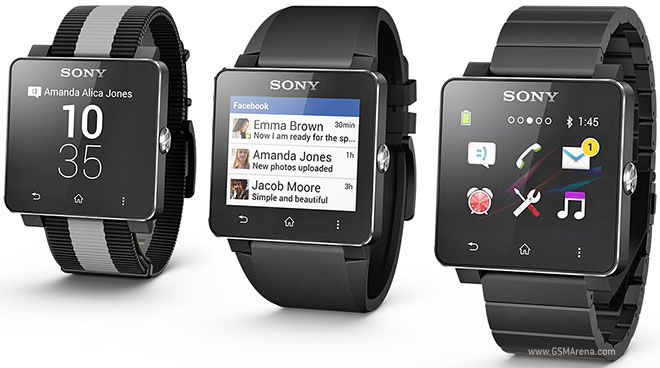
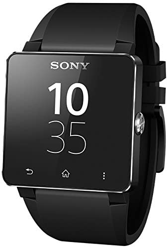

Sony
The Sony SmartWatch is a line of wearable devices developed and marketed by Sony Mobile that connect to Android smartphones and can display Twitter feeds and SMS, among other things. Different versions are compatible with different Android devices.
The original "MN2" Sony SmartWatch from 2012
The original Sony SmartWatch, model MN2SW, came with a flexible silicone wristband with multiple colors available. It was introduced at CES 2012 and launched later in March 2012.[4]

2021



2014
